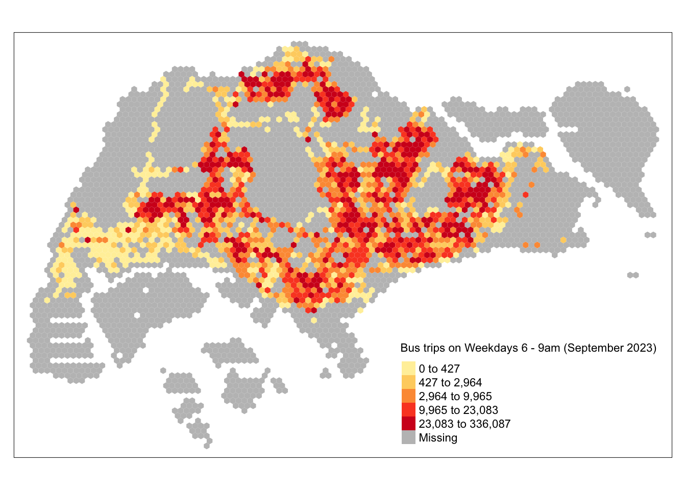

pacman::p_load(sf, sfdep, tmap, tidyverse, knitr)Take-home Exercise 1B: Geovisualization and Analysis
Overview
The aim of this study is to uncover spatial and spatio-temporal mobility patterns of public bus passengers in Singapore.
The main modes of analysis to be used here are Local Indicators of Spatial Association (GLISA) and Emerging Hot Spot Analysis (EHSA).
In doing these study, we will be looking at bus trips started during the hours below.
| Peak hour period | Bus tap on time |
|---|---|
| Weekday morning peak | 6am to 9am |
| Weekday afternoon peak | 5pm to 8pm |
| Weekend/holiday morning peak | 11am to 2pm |
| Weekend/holiday evening peak | 4pm to 7pm |
More details about the study can be found here.
In this part of the study, we will do thematic mapping on the bus commuter traffic data generated from Data Wrangling.
Methodology
For the geovisualization and analysis, I want to answer the following questions.
How does bus commuter traffic differ from month to month within the same hour of the day?
How does bus commuter traffic differ through out the week?
To answer these questions, I will generate groups of plots to compare and contrast them, look for patterns, and answer the questions above.
Setup
Setting Up the R Environment
We will load the following R packages needed for this study.
tmap: for thematic mapping
sf: for geospatial data handling
tidyverse: for non-spatial data handling
sfdep: for spatial analysis
knitr:for prettifying presentation
Loading the data
Important
Before running this part, please run all the code chunks in Data Wrangling as it generates the data needed for this document.
Use read_rds() to load the rds data needed for geovisualization and analysis.
sg_honeycomb <- read_rds("data/rds/sg_honeycomb_with_num_busstops.rds")
bus_peaks_hc202310 <- read_rds("data/rds/bus_peaks_hc202310.rds")
bus_peaks_hc202309 <- read_rds("data/rds/bus_peaks_hc202309.rds")
bus_peaks_hc202308 <- read_rds("data/rds/bus_peaks_hc202308.rds")sg_honeycomb- contains the honeycomb grid that covers Singapore boundariesbus_peaks202310- bus commuter data for peak times for October 2023bus_peaks202309- bus commuter data for peak times for September 2023bus_peaks202308- bus commuter data for peak times for August 2023
Initial peek
First, we will quickly visualize the data using bus_peaks202310 to get initial insights and directions on the next step in our analysis.
Single plot
tm_shape(bus_peaks_hc202310)+
tm_fill("WEEKDAY_AM_TRIPS",
style = "quantile",
palette = "YlOrRd",
title = "Bus trips on Weekdays 6 - 9am (September 2023)")
From this simple plot, I know that the data wrangling went well as the plot generated as expected.
The colored hexagons correspond to the hexagons with bus stops.
Trip data is plotted to the map with expected values
Multiple plots
Now, let’s try plotting the maps for the different peak times for September.
weekday_am <- tm_shape(bus_peaks_hc202310)+
tm_fill("WEEKDAY_AM_TRIPS",
style = "quantile",
palette = "YlOrRd",
title = "Weekdays 6 - 9am")
weekday_pm <- tm_shape(bus_peaks_hc202310)+
tm_fill("WEEKDAY_PM_TRIPS",
style = "quantile",
palette = "YlOrRd",
title = "Weekdays 5 - 8pm")
weekend_am <- tm_shape(bus_peaks_hc202310)+
tm_fill("WEEKEND_AM_TRIPS",
style = "quantile",
palette = "YlOrRd",
title = "Weekdays and Holidays 11am - 2pm")
weekend_pm <- tm_shape(bus_peaks_hc202310)+
tm_fill("WEEKEND_PM_TRIPS",
style = "quantile",
palette = "YlOrRd",
title = "Weekdays and Holidays 4 - 7pm")
tmap_arrange(
weekday_am,
weekday_pm,
weekend_am,
weekend_pm
)
Doing analysis on this data is